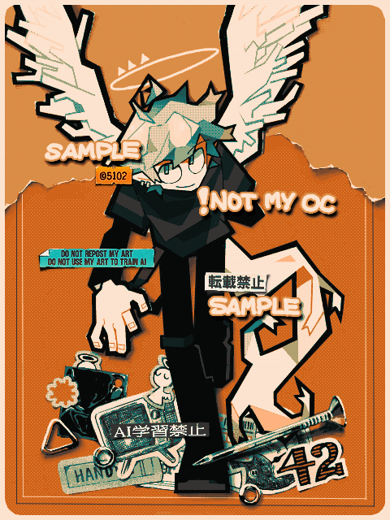

Made with
Tegaki Editor
手書きブログで描いたもの。
こちらはアートトレードの絵で、キャラクターはNikki氏のOCです。
足元のオブジェクトの質感を見てほしい！レイヤー1枚でここまで描けるんだぜ。
オブジェクトの模写って練習もしてなければやり方もわからないんだけど、黒いビニルとか釘の質感がすごい面白く描けた。
というか12月になったのでグラコロが食いたい！！！
冬が好きな理由の一つがマクドナルドのグラコロだ。基本的に、その年にグラコロは1個しか食べないんだけど、社会人になったしお金も溜まってるので、今年は2回くらい食いたいな。
2024/12/01
 お借り（Art trade）
お借り（Art trade）